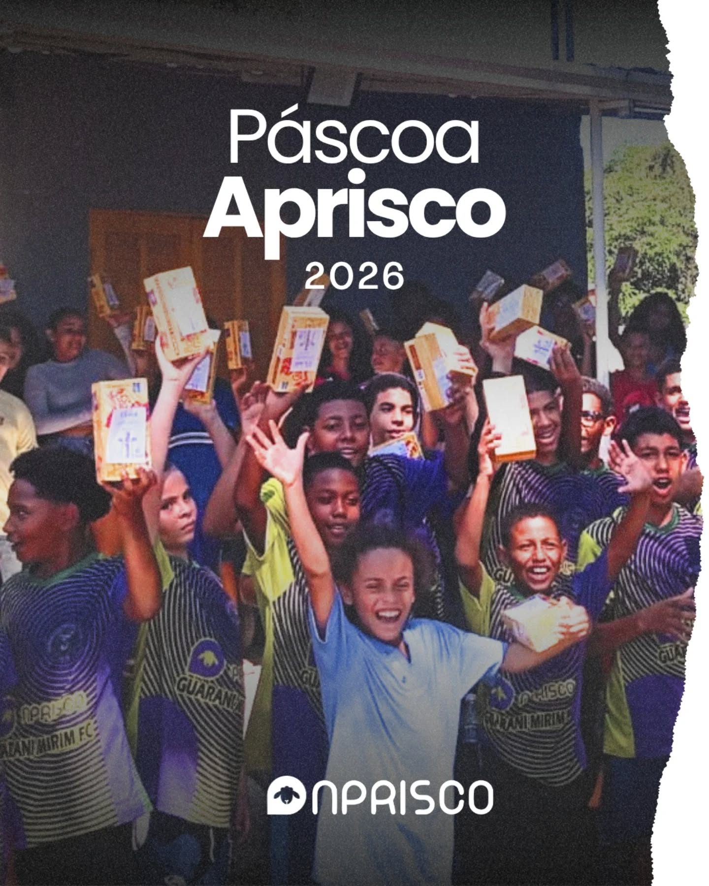
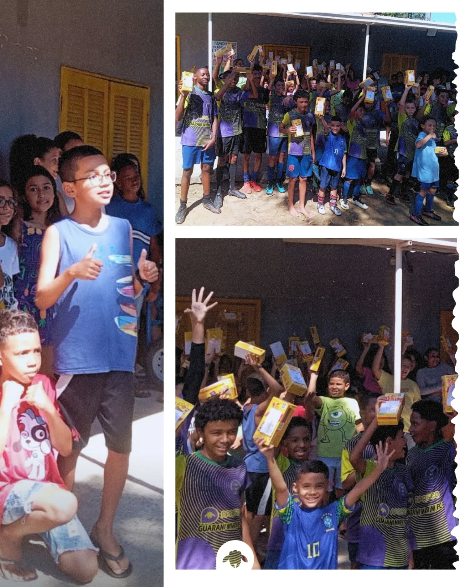
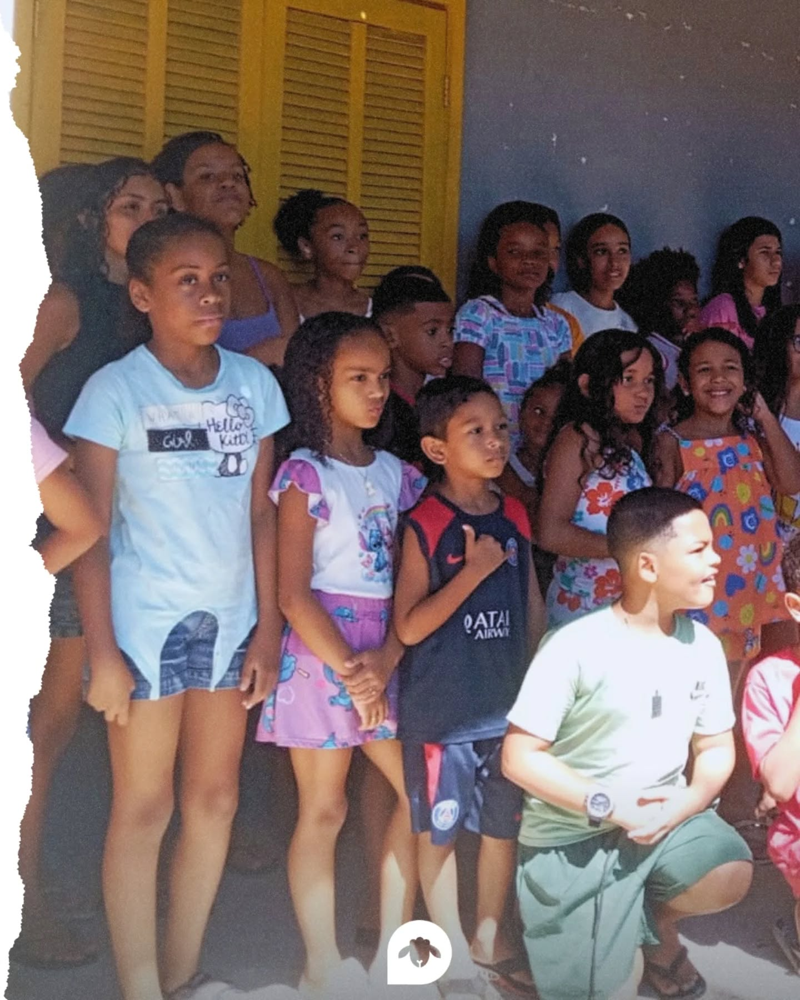

0
atendimentos por ano
Desde 2014, O Aprisco converte vulnerabilidade em potencial — com método, métricas e transparência. Mais de 9.000 atendimentos por ano. 90 pontos na auditoria da Rede Gerando Falcões.



Atuamos com foco em educação, cidadania e desenvolvimento social, conectando pessoas, oportunidades e impacto real no território.
Resultados concretos que reforçam nossa transformação social.
atendimentos por ano
jovens ativos nos programas
pessoas formadas profissionalmente (2023)
cestas básicas distribuídas (2024)
auditoria Rede Gerando Falcões
atendidas: Itaguaí e Mangaratiba
Cada projeto é conduzido com responsabilidade, gestão e foco em transformação duradoura.
Aprovados e auditados pela Rede Gerando Falcões — referência nacional em gestão de impacto social.